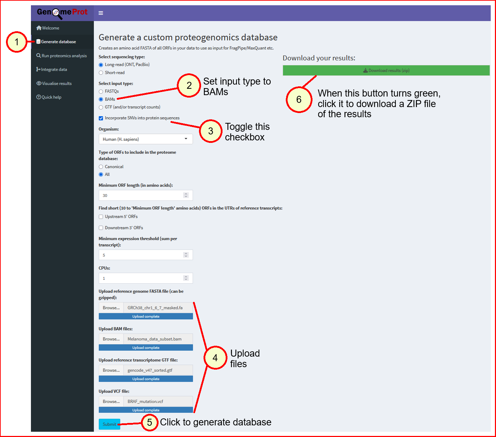
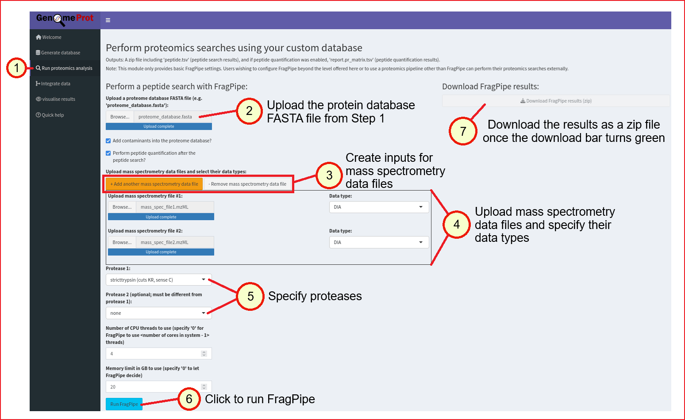
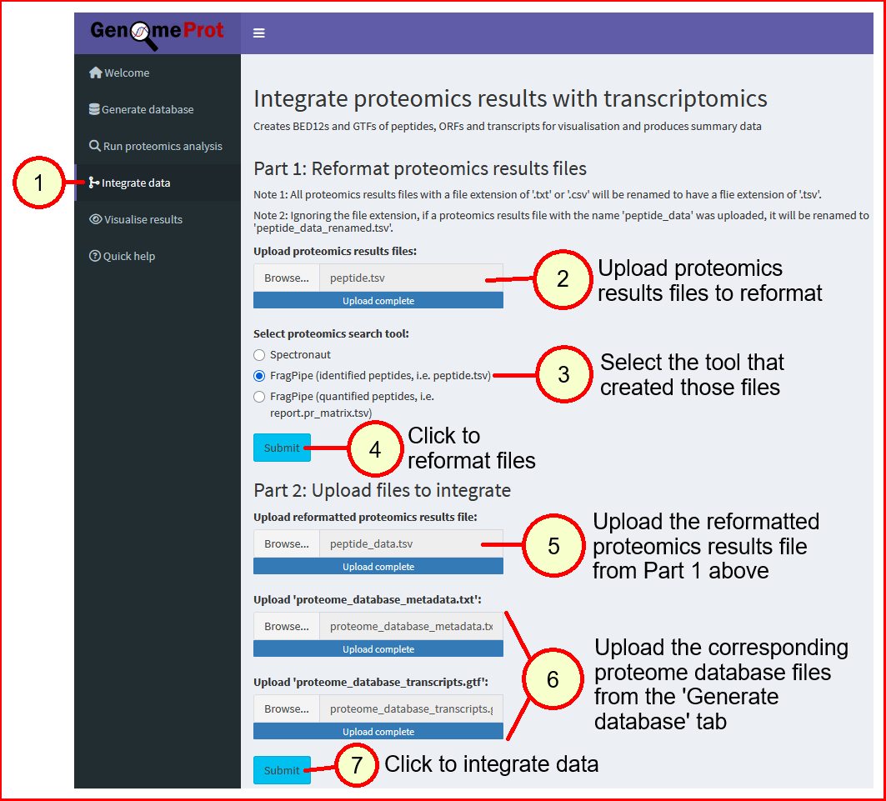
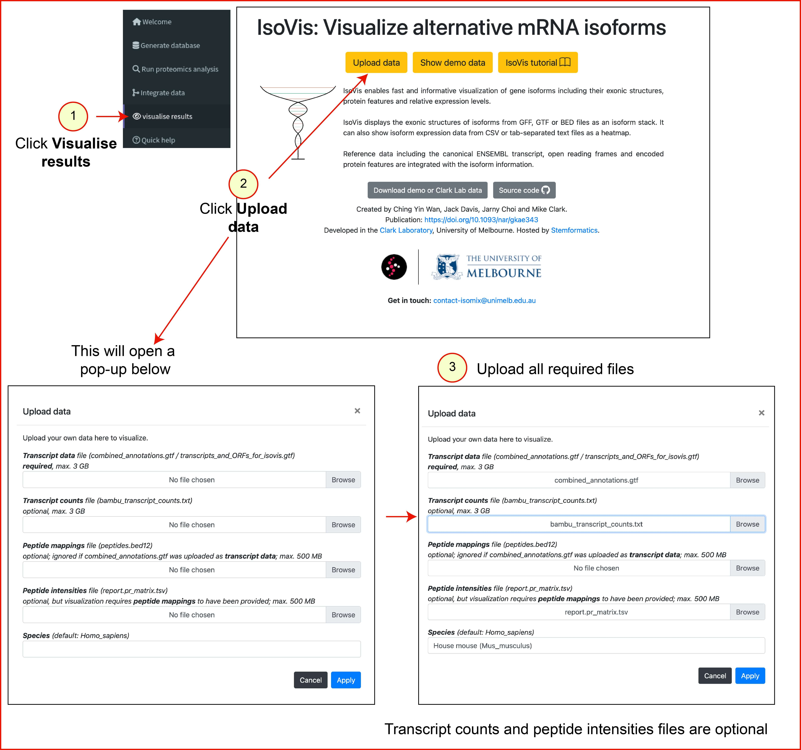
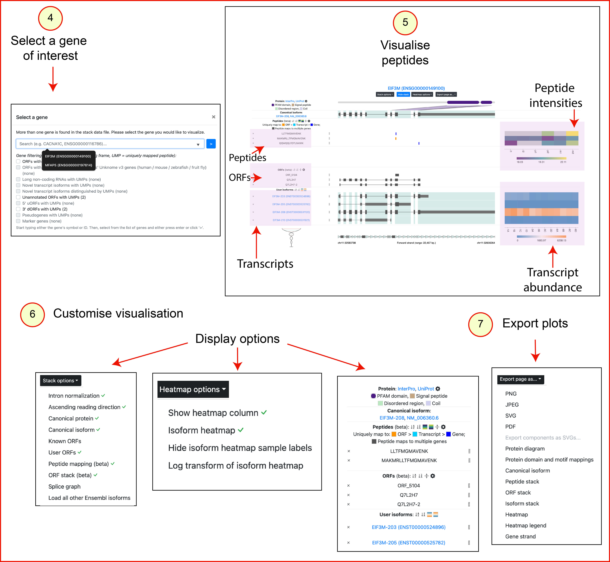
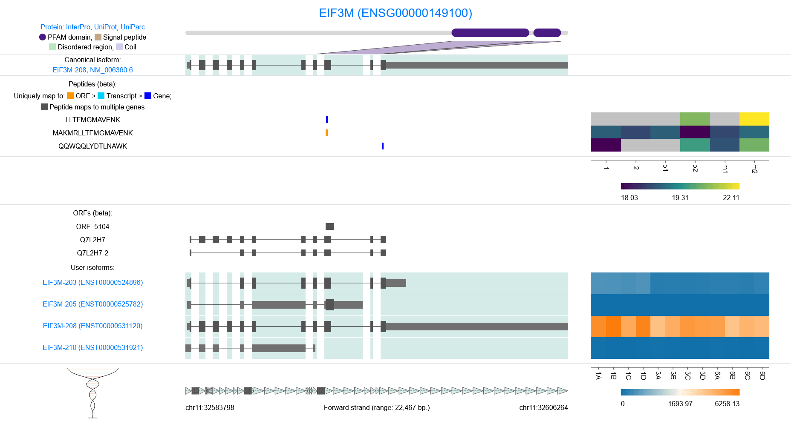

GenomeProt is a comprehensive proteogenomic analysis tool used to identify:
The workflow consists of four steps:
The welcome page of the local GenomeProt server contains a button for running the test data through GenomeProt and validating that the installation is set up correctly.
There are five test data files that come with the local GenomeProt installation, all located within the testdata/ directory:
long_read_bam/Melanoma_data_subset.bam)GRCh38_chr1_6_7_masked.fa)gencode_v47_sorted.gtf)BRAF_mutation.vcf)peptide_data.tsv)The first 4 test data files listed above will be run through the database generation module to create a variant-aware proteome database.
Next, the fifth test data file and the generated proteome database will be run through the proteogenomics integration module to create an integration summary report and files for visualising the ORFs, transcripts and genes identified.
As the test data is running through GenomeProt, a loading icon will be shown.
If the test data has finished running and no errors have occurred, the 'Download results (zip)' button will be enabled and turn green. Clicking on the button will download a zip archive containing the integration summary report and visualisation files.
Otherwise, an error message will be displayed and the 'Download results (zip)' button remains disabled.
Each step of the GenomeProt workflow is described below. Steps 1 (database generation) and 3 (integrate data) contain instructions on how to use them with test data, while Step 4 (visualise results) has general usage instructions that can be followed where appropriate.
Users can choose between short-read and long-read options depending on their data type.
The local GenomeProt server supports database generation using:
Users can also generate a variant-aware proteome database using an optional multisample VCF file generated from variant calls derived from the same samples.
testdata/ directory of the local GenomeProt server to upload:
GRCh38_chr1_6_7_masked.fa)long_read_bam/Melanoma_data_subset.bam)gencode_v47_sorted.gtf)BRAF_mutation.vcf)
proteome_database.fasta: Multi-FASTA protein databaseproteome_database_metadata.txt: TSV file containing annotations for candidate protein sequencesproteome_database_transcripts.gtf: GTF file with transcript coordinates used to generate the proteome databaseThe expected contents of the test data ZIP output file can be downloaded here.
Note: To generate a database directly from files larger than 20 GB, run the command-line R and Python scripts instead.
Step 2 accepts the protein database file (.fasta) generated in Step 1 and your mass spectrometry data files to call FragPipe for identifying proteins and peptides in your dataset.

peptide.tsv: Peptide search resultsreport.pr_matrix.tsv: Peptide counts (only outputted if peptide quantification was performed)This step maps peptides identified in Step 2 to spliced transcript coordinates.
proteome_database_metadata.txt and proteome_database_transcripts.gtfpeptide.tsv (discovered peptides) OR report.pr_matrix.tsv (quantified peptides)This module consists of two parts: Reformatting proteomics results files and performing proteogenomics integration.
Under 'Part 1: Reformat proteomics results files', upload the proteomics results files you have obtained from the proteomics search tool you used, then select that tool from the list provided and click 'Submit'.
Once the server has finished processing the provided files, it will create a single reformatted peptide results file (peptide_data.tsv).
Click on the enabled and green 'Download reformatted results file (peptide_data.tsv)' button to download the reformatted file.
Afterwards, under 'Part 2: Upload files to integrate', upload the reformatted peptide results file from Part 1 and the proteome database metadata file (proteome_database_metadata.txt) and transcript annotation GTF file (proteome_database_transcripts.gtf) from Step 1, then click 'Submit'.
When data integration is complete, the 'Download results (zip)' button will be enabled and turn green. Click on it to download a zip file containing an HTML integration summary report and visualisation files.
testdata/peptide_data.tsv).proteome_database_metadata.txt file from the ZIP fileproteome_database_transcripts.gtf file from the ZIP file
Output directory contents:
summary_report.html: Summary report of mapped peptides, transcripts, and ORFsreport_images/: Folder containing PDF versions of graphs from the summary reportpeptide_info.tsv: Detailed peptide mapping annotationscombined_annotations.gtf: GTF file with mapped peptides, ORF annotations and transcript coordinates for visualisation in IsoVispeptides.bed12: BED12 file with mapped peptide coordinates for visualisation in the UCSC Genome Browsertranscripts.bed12: BED12 file with transcripts supported by peptide evidence for visualisation in the UCSC Genome BrowserORFs.bed12: BED12 file with ORFs supported by peptide evidence for visualisation in the UCSC Genome BrowserThe expected contents of the test data ZIP output file can be downloaded here.
This step visualises peptides on transcript and gene coordinates using IsoVis.
combined_annotations.gtf as the 'transcript data' file (max. 3 GB).

Visualisation output:
The IsoVis visualisation displays separate tracks for peptides, ORFs and transcripts.
Users can limit their analysis to specific peptides, ORFs or transcripts of interest
by hiding irrelevant parts of the visualisation and
using the peptide and ORF stacks to highlight specific features.
Overlapping ORFs are shown using a hatching pattern. Coding regions are represented
as thick dark grey boxes. Peptides uniquely mapped to ORFs, transcripts, and genes
are indicated in orange, cyan, and blue, respectively. Multi-mapping peptides are dark grey.
Below is an example exported PNG image from IsoVis:

For additional IsoVis details, refer to the documentation here.